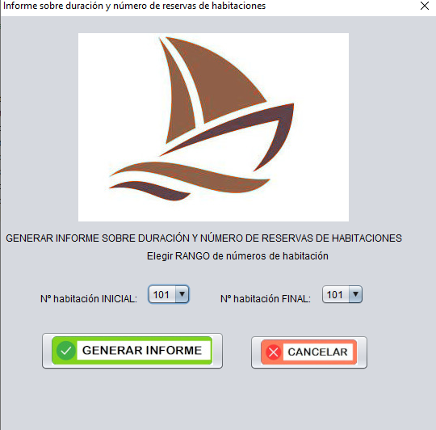

Con esta opción podrá obtener un informe de las reservas realizadas en un rango de habitaciones del hotel.
Para generar el informe, deberá indicar los números de habitación de la primera y última habitación a considerar en el informe.
En dicho informe, además de los datos de cada reserva, se mostrará el número de reservas y la duración total de reservas realizadas para cada habitación.
Asimismo, se mostrará al final del informe un gráfico comparativo mostrando la duración total de las reservas realizadas para cada habitación del rango considerado.
